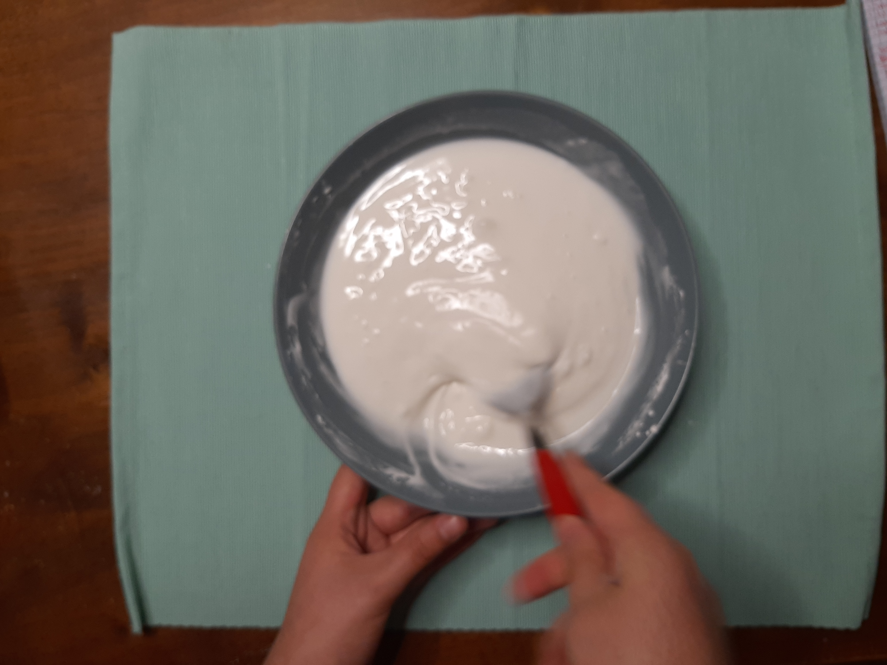
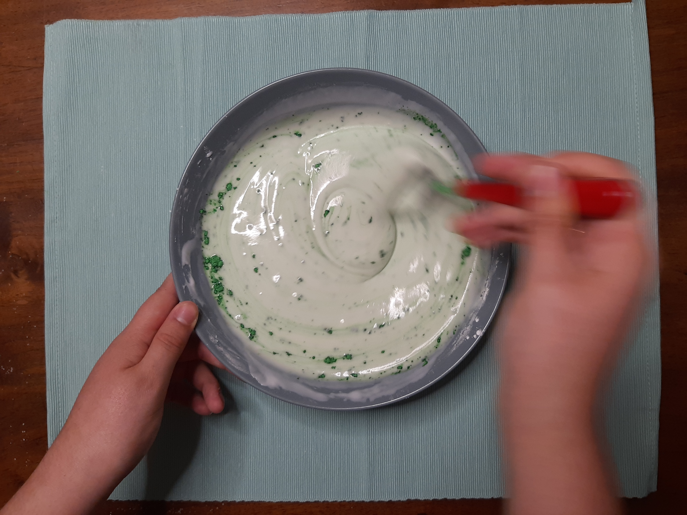
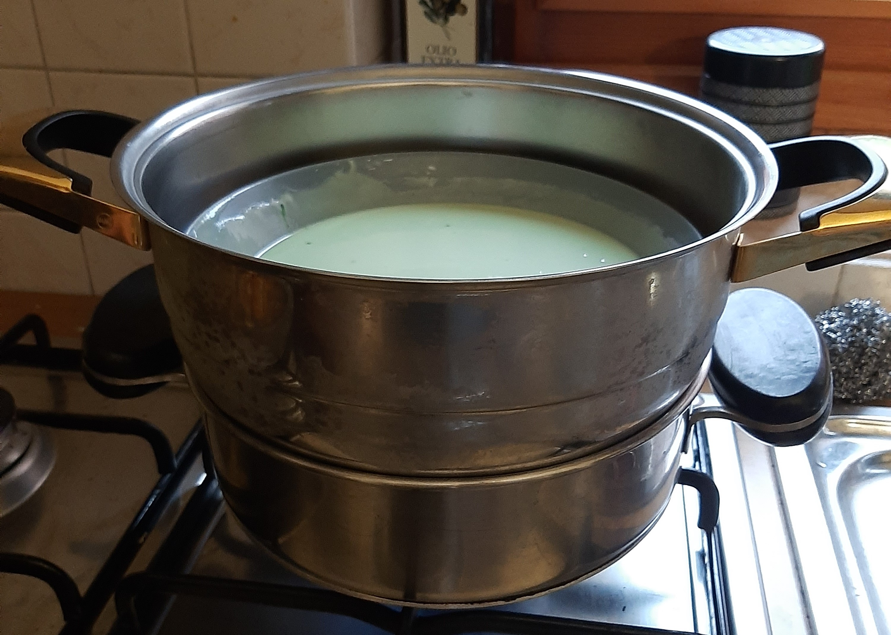
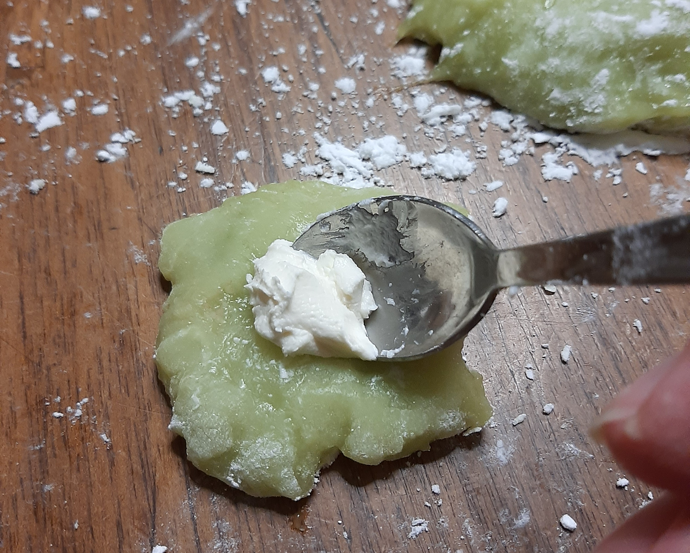
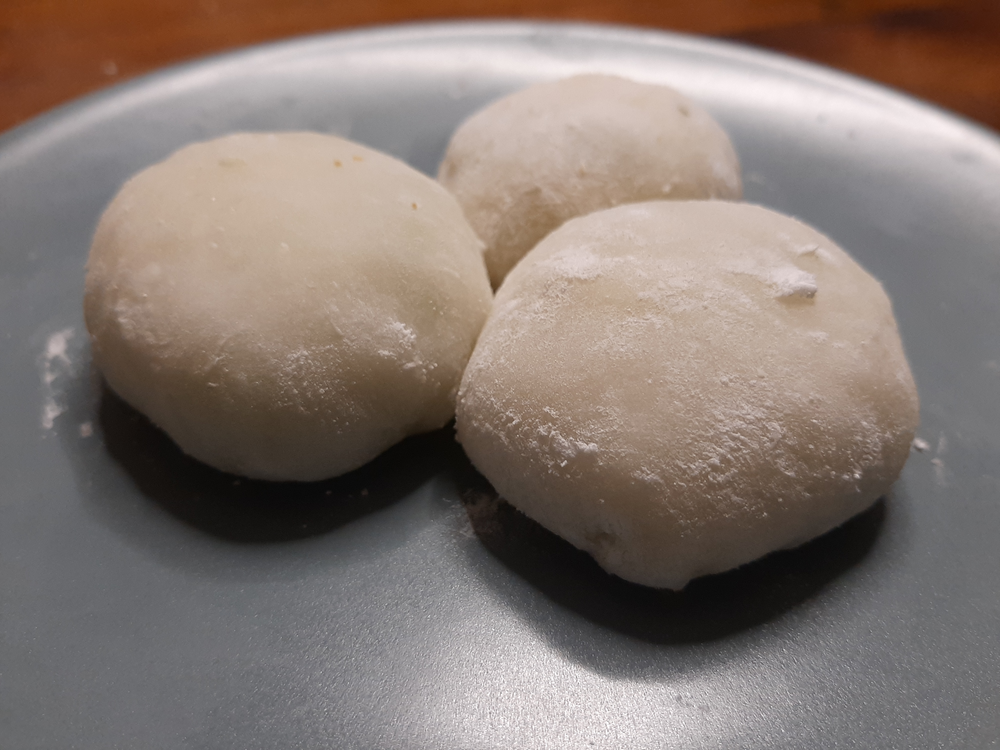

- Mescolare assieme farina, acqua e zucchero

- Dividere l'impasto in due ciotole e aggiungere il matcha ad una di esse. Mescolare bene per evitare che si formino grumi

- Mettere l'impasto in una vaporiera per 15 minuti

- Aspettare che l'impasto si raffreddi e cospargere di amido il piano da lavoro

- Staccare pezzettini di pasta verde dalle dimensioni di due noci e stendere sul piano da cucina. Mettere un cucchiaino di mascarpone al centro e chiudere facendo attenzione a non lasciare buchi. Dopodichè ripetere lo stesso processo con uno strato fine di pasta bianca

- Servire!
